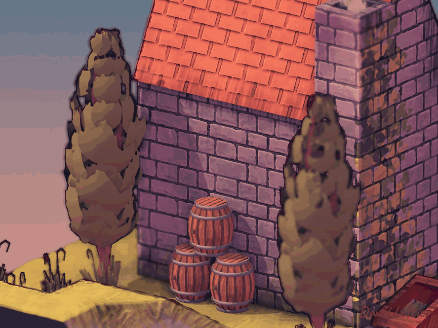

色调分离或颜色量化是减少图像中唯一颜色数量的过程。 你可以使用此着色器为你的游戏赋予漫画书或复古风格。 结合outlining使用，可以实现完整的卡通艺术风格。
实现色调分离的方法有多种。 此方法直接处理灰度值，间接作用于图像的RGB值。 对于每个片元，它将RGB颜色映射为灰度值。 然后将灰度值映射到它的下一级和上一级色阶。 最后选择最接近原始灰度值的色阶，再映射回RGB值。 这个新的RGB值成为片元颜色。 我觉得这种方法比一般常见的方法效果更好。
// ...
float levels = 10;
// ...levels参数控制离散色阶的数量。
它会将连续的0到1的值分割成多个区间。
例如4个色阶时，0.0到1.0会被分割成0.0、0.25、0.5、0.75和1.0。
// ...
fragColor = texture(posterizeTexture, texCoord);
// ...采样当前片元的颜色。
// ...
float greyscale = max(fragColor.r, max(fragColor.g, fragColor.b));
// ...将RGB值映射为灰度值。 这里用的是R、G、B中的最大值作为灰度。
// ...
float lower = floor(greyscale * levels) / levels;
float lowerDiff = abs(greyscale - lower);
// ...将灰度映射到下一级色阶，并计算它与灰度本身的差值。 例如灰度为0.87，色阶为4时，下一级色阶是0.75，差值是0.12。
// ...
float upper = ceil(greyscale * levels) / levels;
float upperDiff = abs(upper - greyscale);
// ...计算上一级色阶及差值。 以上例为例，上一级色阶是1.0，差值是0.13。
// ...
float level = lowerDiff <= upperDiff ? lower : upper;
float adjustment = level / greyscale;
// ...选择距离灰度最近的色阶计算调整比例。 调整比例为量化灰度值与未量化灰度值的比值。 该比例用于将量化的灰度映射回RGB值。
// ...
fragColor.rgb * adjustment;
// ...将RGB乘以调整比例后，max(r, g, b)即为量化后的灰度值， 实现了灰度向RGB的映射。
(C) 2019 David Lettier
lettier.com